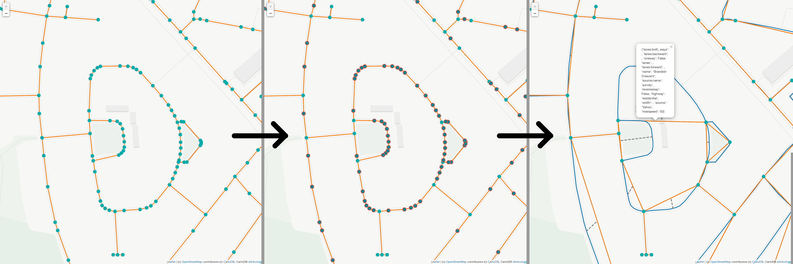

Building Graphs
Introduction
We use LightOSM.jl as a basis to handle all the downloading, saving and importing of OSM data. We provide similar functions for (down)loading graphs which should feel very similar to any user of LightOSM.
The LightOSM.OSMGraph instance is parsed and simplified into a MetaDiGraph, preserving the topology of the original street network, while reducing the number of nodes as much as possible. The geometry and various other parameters are attached to the props of every edge and vertex.
One noteable difference to the LightOSM graphs is that we take special care to not assume anything about the dataset from OSM. Therefore, whenever there is no information available about a certain tag, we parse it as missing, rather than setting a default value.

API
ShadowGraphs.add_edge_with_data!ShadowGraphs.add_this_nodeShadowGraphs.countallShadowGraphs.decompose_way_to_primitivesShadowGraphs.geolinestringShadowGraphs.get_all_node_listsShadowGraphs.get_rotational_directionShadowGraphs.is_circular_wayShadowGraphs.is_end_nodeShadowGraphs.parse_lanesShadowGraphs.parse_raw_waysShadowGraphs.shadow_graph_from_downloadShadowGraphs.shadow_graph_from_fileShadowGraphs.shadow_graph_from_light_osm_graphShadowGraphs.shadow_graph_from_objectShadowGraphs.width
Exposed functions
ShadowGraphs.shadow_graph_from_file — Functionshadow_graph_from_file(file_path::String; network_type::Symbol=:drive, timezone=tz"Europe/London")builds the shadow graph from a file containing OSM data. The file could have been downloaded with either shadow_graph_from_download or LightOSM.download_osm_network.
arguments
- file_path: path to file. either
.osm,.xmlor.json - network_type: type of network stored in file. Options are the same as in
LightOSM:
:drive, :drive_service, :walk, :bike, :all, :all_private, :none, :rail
ShadowGraphs.shadow_graph_from_download — Functionfunction shadow_graph_from_download(download_method::Symbol;
timezone=tz"Europe/London",
network_type::Symbol=:drive,
metadata::Bool=false,
download_format::Symbol=:json,
save_to_file_location::Union{String,Nothing}=nothing,
download_kwargs...)downloads and builds the shadow graph from OSM.
arguments
download_method::Symbol: Download method, choose from:place_name,:bbox,:point,:polygonand (added by this package):extent.timezone: Timezone the streets are in.network_type::Symbol=:drive: Network type filter, pick from:drive,:drive_service,:walk,:bike,:all,:all_private,:none,:railmetadata::Bool=false: Set true to return metadata.download_format::Symbol=:json: Download format, either:osm,:xmlorjson.save_to_file_location::Union{String,Nothing}=nothing: Specify a file location to save downloaded data to disk.
Required Kwargs for each Download Method
download_method=:place_name
place_name::String: Any place name string used as a search argument to the Nominatim API.
download_method=:bbox
minlat::AbstractFloat: Bottom left bounding box latitude coordinate.minlon::AbstractFloat: Bottom left bounding box longitude coordinate.maxlat::AbstractFloat: Top right bounding box latitude coordinate.maxlon::AbstractFloat: Top right bounding box longitude coordinate.
download_method=:point
point::GeoLocation: Centroid point to draw the bounding box around.radius::Number: Distance (km) from centroid point to each bounding box corner.
download_method=:polygon
polygon::AbstractVector: Vector of longitude-latitude pairs.
download_method=:extent
extent::Extents.Extent: Extent holding the bounding box for the download. Follows theGeoInterfaceconvention (for exampleextent=Extent(X=(minlon, maxlon), Y=(minlat, maxlat)))
Network Types
:drive: Motorways excluding private and service ways.:drive_service: Motorways including private and service ways.:walk: Walkways only.:bike: Cycleways only.:all: All motorways, walkways and cycleways excluding private ways.:all_private: All motorways, walkways and cycleways including private ways.:none: No network filters.:rail: Railways excluding proposed and platform.
returns
MetaDiGraph with topologically relevant nodes and edges and relevant data attached to every node and edge.
Internals
ShadowGraphs.shadow_graph_from_object — Functionshadow_graph_from_object(osm_data_object::Union{XMLDocument,Dict}; network_type::Symbol=:drive, timezone)builds the shadow graph from an object holding the raw OSM data. This function is using the graph_from_object function from LightOSM to first build a LightOSM.OSMGraph object which, due to the opinionated parsing of tags in LightOSM holds some made up values in the ways field for non-existing tags.
In this function, we replace these opinionated values with the ways we get from ShadowGraphs.parse_raw_ways. The main difference compared to LightOSM is, that we set every tag we expect from a street, but not get to missing, instead of assuming some value.
The in this way augmented graph gets then handed over to shadow_graph_from_light_osm_graph.
arguments
- osmdataobject
- networktype: type of network stored in osmdata_object. Options are the same as in
LightOSM:
:drive, :drive_service, :walk, :bike, :all, :all_private, :none, :rail
timezone: timezone the streets are in.
ShadowGraphs.shadow_graph_from_light_osm_graph — Functionshadow_graph_from_light_osm_graph(g; timezone)transforms a LightOSM.OSMGraph into a MetaDiGraph, containing only the topologically relevant nodes and edges. Attached to every edge and node comes a lot of data, needed for future processing of the graph, preserving all information coming from open street maps (I think we throw away the node tags).
The returned MetaDiGraph conforms to the requirements to be considered a shadow graph and used within the MinistryOfCoolWalks ecosystem.
All props prefixed with sg_ are handled by functions within the MinistryOfCoolWalks ecosystem and should be considered read-only. Changing them directly might lead to unexpected behaviour.
timezone is used to set the tz field of the ShadowObservatory.
Always clone geometries with ArchGDAL.clone if you want to use them separate of the graph. (Check your references!)
ShadowGraphs.add_edge_with_data! — Functionadd_edge_with_data!(g, s, d; data=Dict())adds new edge from s to d to g::MetaDiGraph, and populates it with the props given in data.
data is expected to have at least a key :sg_street_geometry, containing the geometry of the street between s and d as an ArchGDAL linestring in the WSG84 system. (Use CoolWalksUtils.apply_wsg_84!)
Special care is given to self and multi edges:
- self edges: if
s==d, two new vertices are added at 10% and 60% along the:sg_street_geometry, withpropsof:sg_lat,:sg_lon,sg_geometryand:sg_helper=trueset acordingly.
These new vertices (h1 and h2) are then connected to form a loop like: s --helper_edge1--> h1 --real_edge--> h2 --helper_edge2--> d, where helper_edge1 and helper_edge2 are helper edges with only one prop of :sg_helper=true. real_edge is carrying all the props defined in data.
- multi edges: if
Edge(s,d) ∈ Edges(g), we add one new helper vertex at 50% along the:sg_street_geometrywithpropsof:sg_lat,:sg_lon,sg_geometryand:sg_helper=true.
We connect to the graph like this: s --helper_edge--> h --real_edge--> d, where helper_edge is a helper edge with only one prop, :sg_helper=true. real_edge carries all the props specified in data.
This process is nessecary to preserve the street network topology, since MetaDiGraphs do not support multi edges (and therefore also no multi self edges).
ShadowGraphs.geolinestring — Functiongeolinestring(nodes, node_id_list)creates an ArchGDAL linestring from a dictionary mapping osm node ids to LightOSM.Node and a list of osm node ids, representing the nodes of the linestring in order.
ShadowGraphs.get_all_node_lists — Functionget_all_node_lists(primitive_way, topological_osm_ids)get vector of vectors where each element contains the osm_ids between two topologically relevant nodes, in the same order as they occur in primitive way. Takes care of cyclical ways.
Only use on primitive ways.
ShadowGraphs.decompose_way_to_primitives — Functiondecompose_way_to_primitives(way::Way)Decomposed a way with possible self-intersections/loops into multiple ways which are guaranteed to be either
- non-intersecting lines, where every node in the way is unique, or
- circular ways, where only the first and last node in the way are not unique.
example
a way with nodes [10,20,30,40,50,30] (which looks like a triangle on a stick, note the repeated 30) will be decomposed into two ways, with the nodes [10,20,30] and [30,40,50,30].
ShadowGraphs.get_rotational_direction — Functionget_rotational_direction(way::Way, nodes, direction)calculates the direction of rotation of the way if walked through in the direction of direction (either 1 or -1). Since the node locations are stored seperately, you have to pass in a dict node_id=>LightOSM.Node into nodes. Used only on simplified ways.
Returns
1if the rotation is righthanded-1if the rotation is lefthanded0if the way is not closed
ShadowGraphs.countall — Functioncountall(numbers)counts how often every number appears in numbers. Returns dict with number=>count
ShadowGraphs.add_this_node — Functionadd_this_node(g, osm_id)checks if the node with osm_id in graph g should be added to the shadow graph. Currently, we add a node if one of the following is true:
- if the number of ways the node is part of is larger than 1
- if the node is the end of a street, that is, if it has only one neighbour in
g - if the node occurs more than once in the way it is part of, excluding the end point, if the way is circular
ShadowGraphs.is_circular_way — Functionis_circular_way(way::Way)checks if a LightOSM.Way way starts at the same node it ends.
ShadowGraphs.is_end_node — Functionis_end_node(g, index)checks if node index in graph g represents the end of a street (that is, has as most one neighbour).
ShadowGraphs.parse_raw_ways — Functionparse_raw_ways(raw_ways, network_type)parses a list of dicts describing OSM Ways into LightOSM.Way instances. This function is a slightly modified version of the one used in LightOSM (parse_osm_network_dict), to be able to use our own, non-dafault value assuming parsers for the labels.
returns
a dictionary mapping osm_id to LightOSM.Way
ShadowGraphs.parse_lanes — Functionparse_lanes(tags::AbstractDict, tagname)parses the value of the key tagname in tags, assuming it to be a numerical value describing a certain number of lanes. Returns the parsed number of lanes if the tag exists or missing if not.
ShadowGraphs.width — Functionwidth(tags)less opinionated version of the basic parsing LightOSM does, to parse the width tag of an osm way. Returns the parsed width if the tag exists or missing if not. If values are negative, we take the absolute value.